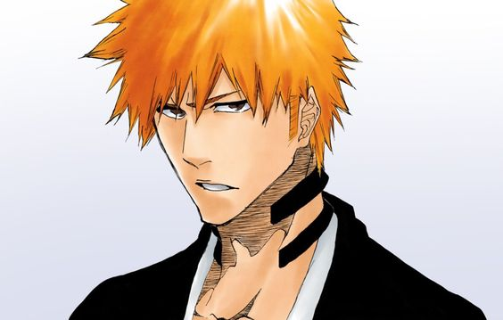
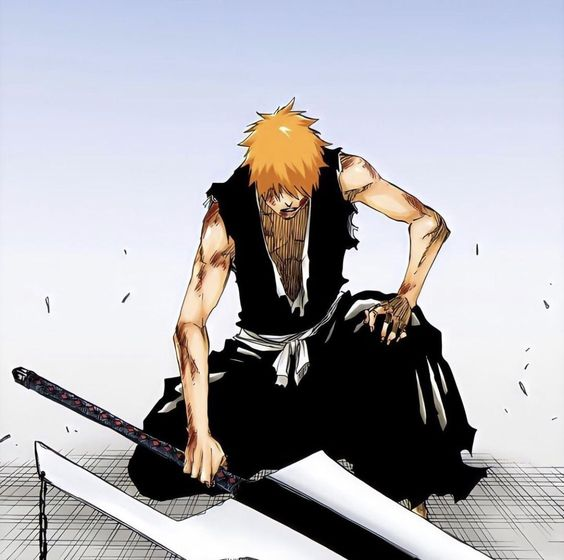

Ичиго Куросаки — человек, гемишт квинси с силами синигами и пустого. Сын Ишшина и Масаки Куросаки, старший брат Карин и Юзу. Муж Орихиме и отец Казуи.ервое, что бросается в глаза — это колючие рыжие волосы Ичиго, черта, из-за которой его высмеивали в течение многих лет. Он довольно высокий, худощавый подросток с персиковым цветом кожи и карими глазами. Он любит носить обтягивающую одежду.
 Он часто ходит в футболках с надписью «15», потому что его имя звучит, как «один-пять». Как заметила сестра Ичиго, Карин, когда он стал синигами, он стал заметно более мускулистым.
Когда Ичиго в духовном обличии, он носит стандартную форму синигами. Первоначально, его грудь пересекал толстый коричневый ремень, на котором держались ножны его меча, но позже он сменился на толстую ленту из четок.Несколько человек, включая Джуширо Укитаке, заметили удивительное сходство Ичиго и Кайена Шибы, бывшего лейтенанта тринадцатого
отряда.